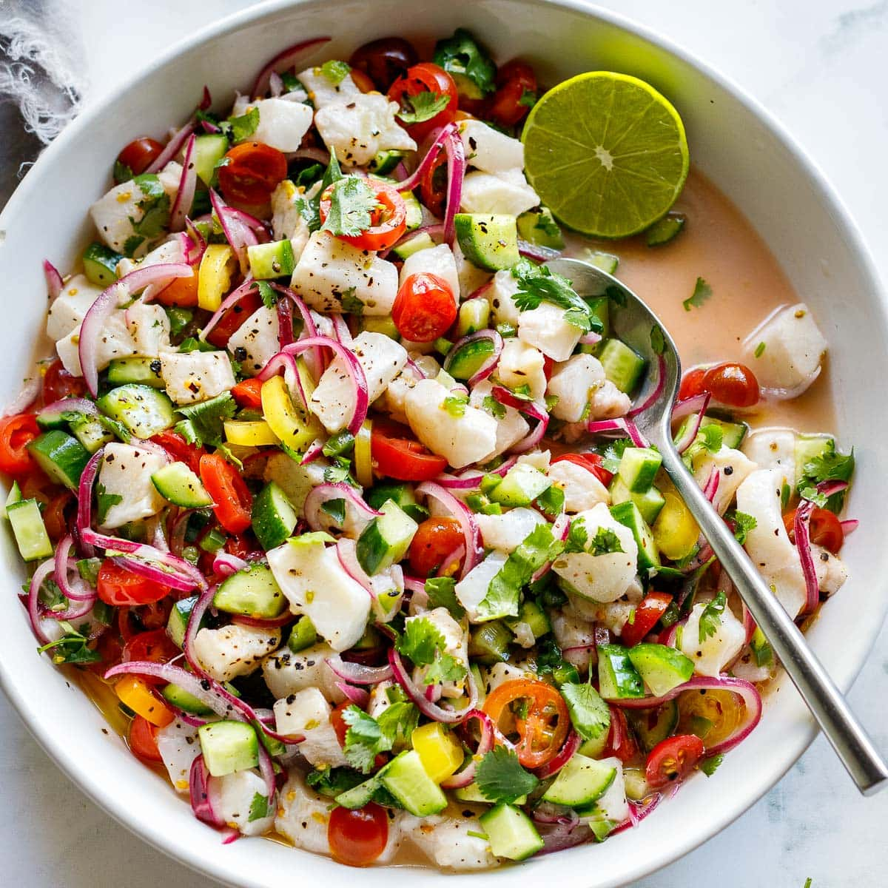

Home
Odin Recipes
Ceviche

What is Ceviche?
Ceviche is a popular seafood based dish, mainly popular in coastal Latin American countries from Mexico, Peru, Ecuador, and even Colombia. While these countries will each champion their own spin on the delicious dish, we will be focusing our attention on the Ecuadorian variety!
Ingredients
- Shrimp - If you can get your hands on them, fresh shrimp will surely make for a killer dish. Otherwise, the frozen ones in your supermarket work just fine! Most recipes will use fish as their base, but my personal preference lies with these shellfish!
- Tomatoes - I love using cherry or grape tomatoes here for an extra sweet flavor.
- Limes - use fresh lime juice to cure the fish. FRESH IS BEST. Choose ripe limes – the more tender they are, the more ripe- so give them a good squeeze before buying. Rock-hard limes produce little juice and are overly tart.
- Red Onions - Red adds nice color here, and their flavor makes them stand out above other onion varieties.
- Cilantro - a must! But if you must sub, go with Italian parsley. Lime juice really mitigates the “soapy” flavor for those of you who have that gene. 🙂
Directions
- Slice the red onions and place in a bowl. Add the salt and lime juice and let these marinate while you continue- this will help remove the bitterness from the onions.
- Cut the fish into 3/4-inch bite-sized pieces and toss with the marinating onions.
- Add the remaining ingredients- cucumber, tomatoes and cilantro and give a good toss. If adding avocado, wait until serving to add it.
- Refrigerate for 45-60 minutes. The longer you let the fish cure in the marinade, the more “cooked” through the ceviche will become. I find 45 minutes is perfect.
Final Remarks
Thanks for reading through this recipe! Hope the ceviche turns out well!